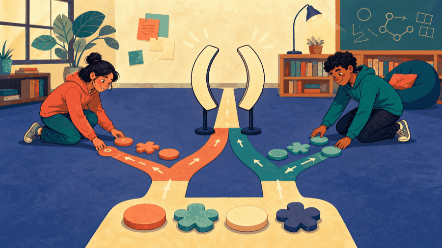

# Lecture 3: Track expressions, scope, storage, and lifetime ## Names, values, visibility, and lifetime **Instructor:** [Dr. Debasish Pattanayak](https://drdebmath.github.io)
## A name is usable only inside its scope ~~~cpp #include <iostream> int main() { int outer = 10; { int inner = 3; outer += inner; } // inner is not visible here std::cout << outer << '\n'; // 13 } ~~~ Keep names in the smallest scope that contains every required use.
## A helper reaches for the whole building <figure class="course-meme-figure"> <figcaption> <p class="course-meme-setup"><strong>Setup</strong> A temporary helper tries to wander into the whole program.</p> <p class="course-meme-punchline"><strong>Punchline</strong> The fence is a polite "please stay here" — nothing personal.</p> </figcaption> </figure>
## Scope controls visibility while lifetime controls existence - **Scope:** where source code may use a name. - **Storage duration:** how long the corresponding object exists. - **Linkage:** whether declarations in different files name the same entity. A local static object has block scope but program-long storage duration.
## Storage duration explains when an object is created and destroyed ~~~cpp // Defined outside every block: program-long storage duration. int completedExperiments = 0; int main() { int today = 2; // exists during this run of main completedExperiments += today; } ~~~ Later, functions will provide a safer interface around shared state. For now, distinguish where a name is visible from how long its object exists.
## Linkage decides which cross-file definition is shared ~~~cpp // data.cpp int sharedCount = 0; // report.cpp extern int sharedCount; ~~~ <code>extern</code> declares an entity defined elsewhere. A complete executable must still contain <code>main</code> and link every required definition.
## Namespaces keep same-named declarations from colliding ~~~cpp namespace laboratory { int completed = 0; } int main() { laboratory::completed = 1; } ~~~ The scope-resolution operator <code>::</code> selects a name from a namespace.
## Two labs, one tool name, one traffic jam <figure class="course-meme-figure"> <figcaption> <p class="course-meme-setup"><strong>Setup</strong> Two laboratories both have a tool named "completed."</p> <p class="course-meme-punchline"><strong>Punchline</strong> Give each tool its own door before the names start bumping into each other.</p> </figcaption> </figure>
## Operators combine values into expressions | Group | Operators | Example | What to remember | |---|---|---|---| | Arithmetic | <code>+ - * / %</code> | <code>7 / 2</code> is 3 | integer division truncates; <code>%</code> needs integer operands | | Relational | <code>< <= > >= == !=</code> | <code>total < 20</code> | the result is a <code>bool</code> | | Logical | <code>&& \|\| !</code> | <code>a && b</code> | short-circuits: the right operand may never run | | Assignment | <code>= += -= *= /= %=</code> | <code>total += 5</code> | modifies the left operand in place | | Increment | <code>++ --</code> | <code>++i</code> versus <code>i++</code> | prefix yields the new value, postfix the old | Operator precedence decides binding when parentheses are absent. Prefer parentheses when a reader might hesitate. ~~~cpp int total = 5 + 3 * 2; // 11 int grouped = (5 + 3) * 2; // 16 bool safe = total < 20 && grouped > 0; ~~~
## The general form of a declaration, a block, and a namespace ~~~cpp <type> <name> = <initial value>; // a declaration introduces a name { // a block opens a new scope <type> <inner name> = <value>; // visible only until the closing brace } // the inner name is destroyed here namespace <namespace name> { <declarations> // reached as <namespace name>::<name> } ~~~ | Part | Meaning | | --- | --- | | `<type>` | What the name means and what operations it allows. | | `<name>` | The identifier. It exists from its declaration to the end of its enclosing block. | | <code>{ }</code> | A block. Names declared inside it are invisible outside it. | | `<namespace name>::` | The qualification that distinguishes same-named declarations. | Declare each name in the smallest block that still contains every use.
## Check yourself: make every binding explicit Which line parenthesizes <code>total < 20 && grouped > 0</code> exactly as C++ already evaluates it? <ol class="course-quiz-options"> <li><button class="course-quiz-option" type="button"><code>total < (20 && grouped) > 0</code></button></li> <li><button class="course-quiz-option" type="button" data-course-quiz-correct><code>(total < 20) && (grouped > 0)</code></button></li> <li><button class="course-quiz-option" type="button"><code>((total < 20) && grouped) > 0</code></button></li> <li><button class="course-quiz-option" type="button"><code>total < ((20 && grouped) > 0)</code></button></li> </ol> <p class="course-quiz-explanation">Relational operators bind tighter than <code>&&</code>, so both comparisons finish before the logical operator combines them.</p>
## Two readers, one line, two different answers <figure class="course-meme-figure"> <p></p> <figcaption> <p class="course-meme-setup"><strong>Setup</strong> Two people read the same arithmetic line and take different routes.</p> <p class="course-meme-punchline"><strong>Punchline</strong> Parentheses are the road signs of expression evaluation.</p> </figcaption> </figure>
## Game evolution: One transition updates the world | Today's concept | Exact game part enabled | |---|---| | expressions and block scope | calculate one candidate move, then commit it | ~~~cpp #include <iostream> int main() { int row = 2, column = 3; int dRow = 0, dColumn = 1; { int nextRow = row + dRow, nextColumn = column + dColumn; row = nextRow; column = nextColumn; } std::cout << row << ' ' << column << '\n'; } ~~~ **Invariant:** outside the inner block, only the committed position remains visible. **Next unlock · L04:** accept different directions and reject unsafe moves.
## Expressions transform program state. · Update game state without leaking temporary names A small block holds one reward calculation while the score remains available to the rest of the program. ~~~cpp #include <iostream> int main() { int score = 4; { int collectedReward = 3; score += collectedReward; } std::cout << score << std::endl; } ~~~ **Takeaways** - Expressions transform program state. - Scope hides transition-only names. - The longer-lived score remains available afterward.
## Track every name by meaning, visibility, lifetime, and linkage - Expressions compute values or effects. - Parentheses make precedence explicit. - Namespaces organize declarations. - Scope, storage duration, and linkage answer different questions. - Avoid global mutable state unless one clearly identified part of the program is responsible for it.
## Verify Update game state without leaking temporary names with a claim, trace, boundary, and improvement Use the practical example as a small experiment. Before you leave, make the reasoning visible: - **Claim:** Expressions transform program state. - **Trace:** name the state that changes and the observation that would confirm it. - **Boundary:** choose one smallest, largest, empty, or invalid input that could expose a defect. - **Improvement:** explain one change that would make the solution clearer or safer. ### Exit ticket Choose one problem to solve now and two to attempt in the lab: - Trace local and global variables with the same name. - Use one inner block for a temporary score update, then print the outer score. - Place two variables with the same name in different namespaces and select both with ::.
## Explain Update game state without leaking temporary names without opening the code Explain today’s idea to a partner without opening the code: 1. State the input, output, and one rule the solution must preserve. 2. Point to the operation that makes progress or changes the state. 3. Name the first test you would run after changing the implementation. If the explanation needs “and then another unrelated thing,” split the design before you code.
## Solve five problems to transfer Update game state without leaking temporary names **IC151 lab practice · 5 problems** 1. Trace local and global variables with the same name. 1. Use one inner block for a temporary score update, then print the outer score. 1. Place two variables with the same name in different namespaces and select both with ::. 1. Evaluate five expressions involving arithmetic and logical precedence. 1. Refactor a program to remove an unnecessary global variable. Reaching this set marks the lecture as studied in this browser. [Open the IC151 lab setup and batch schedule](ic151.html).
## Update a robot pose and score while keeping temporary calculations local. **Studio thread:** Track robot state | Ask | Today’s answer | |---|---| | **Problem** | Update a robot pose and score while keeping temporary calculations local. | | **Model** | A transition maps old state plus one action to new state. | | **Represent** | Scoped names hold row, column, direction, score, and intermediate expressions. | | **Solve** | Evaluate one transition in dependency order. | | **Verify** | Build a before/after state table and evaluate expressions by hand first. | | **Improve** | Reduce mutable scope and make grouping explicit with names or parentheses. | **Technique lens:** state-transition simulation **Compare:** many unrelated variables versus one coherent state model introduced later